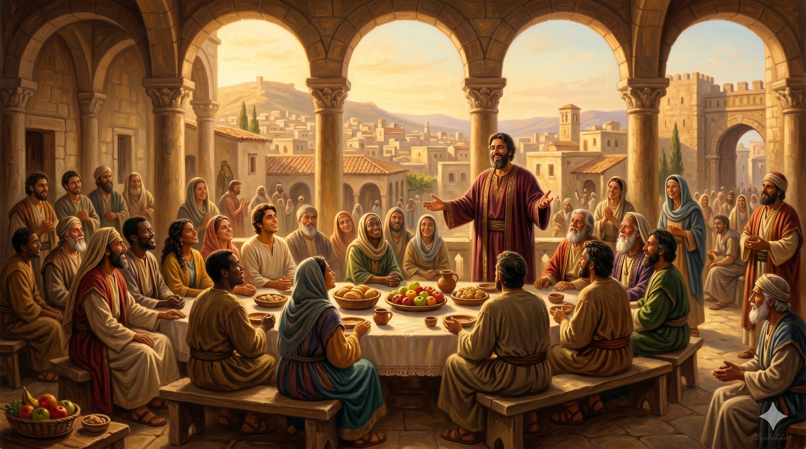

안디옥 회당에서 새로운 이방인 성도들을 향해 따뜻하게 손을 내밀고 있는 바나바 — 그의 얼굴에는 하나님의 은혜를 목격한 자의 기쁨이 가득하다. 황금빛 빛이 쏟아지는 공간에 유대인과 이방인이 함께 앉아 복음을 듣고 있다
"그 때에 스데반의 일로 일어난 환난으로 말미암아 흩어진 자들이 베니게와 구브로와 안디옥까지 이르러 유대인에게만 말씀을 전하는데 … 예루살렘 교회가 이 사람들의 소문을 듣고 바나바를 안디옥까지 보내니 그가 이르러 하나님의 은혜를 보고 기뻐하여 모든 사람에게 굳건한 마음으로 주께 붙어 있으라 권하니 바나바는 착한 사람이요 성령과 믿음이 충만한 사람이라 이에 큰 무리가 주께 더하여지더라" — 사도행전 11:19-24
스데반의 순교 이후 시작된 박해는 성도들을 예루살렘 밖으로 흩뜨렸습니다. 그런데 누가는 이 박해가 오히려 복음 확산의 통로가 되었음을 보여줍니다. 흩어진 성도들이 안디옥에 이르러 이방인들에게도 복음을 전하기 시작하자, 많은 수가 믿고 주께 돌아오는 놀라운 일이 일어났습니다. 예루살렘 교회는 이 소식을 듣고 바나바를 보냅니다. 왜 바나바였을까요? 그는 이미 교회 안에서 '위로의 아들'로 인정받던 사람이었고, 사울을 제자들에게 소개했던 신뢰받는 인물이었습니다. 새로운 부흥의 현장에는 그에 걸맞은 사람이 필요했고, 교회는 바나바를 그 자리에 세웠습니다.
바나바가 안디옥에 도착했을 때, 그가 가장 먼저 한 것은 평가하거나 점검하는 것이 아니었습니다. 그는 "하나님의 은혜를 보고 기뻐했습니다." 이것이 바나바라는 사람의 본질입니다. 그는 이방인들이 믿는 것을 보면서 의심하거나 경계하는 대신, 그 안에서 하나님의 손길을 알아보고 기뻐했습니다. 은혜를 알아보는 눈, 그것이 바나바의 가장 큰 자질이었습니다. 그리고 누가는 덧붙입니다. "바나바는 착한 사람이요 성령과 믿음이 충만한 사람이라." 이 짧은 평가 하나가, 한 사람의 인격을 완전히 담아냅니다.

다양한 배경의 사람들이 함께 모여 복음을 듣는 안디옥 교회 — 경계를 허문 은혜의 공동체가 이렇게 시작되었다
우리는 낯선 것을 볼 때 먼저 의심합니다. 내가 알지 못하는 방식으로 일하시는 하나님을 만날 때, 경계하거나 비판하고 싶은 마음이 먼저 듭니다. 그러나 바나바는 달랐습니다. 그는 유대인과 이방인이 함께 예배하는 낯선 광경을 보면서, 그 안에서 하나님의 은혜를 알아보았습니다. 은혜를 알아보는 눈은 저절로 생기는 것이 아닙니다. 그것은 오랜 기도와 성령의 충만함을 통해 형성되는 영적 감수성입니다. 바나바처럼 어디서든 하나님이 일하시는 것을 알아보는 사람이 될 수 있도록 날마다 훈련해야 합니다.
또한 바나바는 안디옥 성도들에게 "굳건한 마음으로 주께 붙어 있으라"고 권했습니다. 위로의 사람은 그냥 기분 좋은 말만 하는 것이 아닙니다. 진정한 위로는 사람들을 하나님께 더 가까이 붙들어 매는 것입니다. 오늘 당신 주변에 복음 안에서 자라나는 사람이 있습니까? 바나바처럼 그 안에서 은혜를 알아보고, 기뻐하고, 그들이 주님께 더 굳게 서도록 격려해 주십시오.
바나바는 은혜를 보고 기뻐했습니다.
의심하기 전에 먼저 하나님의 손길을 찾으십시오.
착한 사람, 성령과 믿음이 충만한 사람 — 오늘 당신이 들을 수 있는 가장 아름다운 평가입니다.